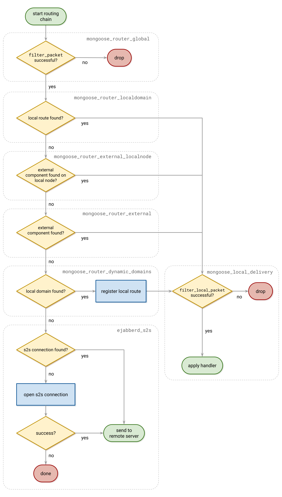

Route of a message through the system
Let's examine the flow of a message sent from user A to user B, both of whom are served by the same domain.
Note that hooks are called at various stages of routing - they perform many tasks, in fact, many MongooseIM functionalities are implemented through hooks & handlers. For a general introduction to hooks, see Hooks and Handlers; to get a closer look at a core few, see the hooks description.
1. Receiving the stanza
User A's ejabberd_receiver receives the stanza and passes it to ejabberd_c2s.
2. Call to user_send_packet
Upon some minimal validation of the stanza, a hook user_send_packet is called.
This is handled by a couple of modules which subscribe to this hook.
Those modules do various complementary tasks, like storing the message in an archive, sending carbon copies, etc.
3. Privacy lists and ejabberd_router:route/3
The stanza is checked against any privacy lists in use and, in the case of being allowed, it will be routed by ejabberd_router:route/3.
This also takes into account "blocking commands", which are part of the privacy system.
4. Chain of routing
Further on, the behaviour is configurable: ejabberd_router:route/3 passes the stanza through a chain of routing modules and applies Mod:filter/3 and Mod:route/3 from each of them.
Each of those modules has to implement xmpp_router behaviour.
There are a few actions available to the module:
- it can drop or route the stanza,
- it can pass the stanza on unchanged or modify it and pass the result on.
A set of routing modules can be set in configuration as routing_modules.
The default behaviour is the following:
mongoose_router_global: runs a globalfilter_packethookmongoose_router_external_local: checks if there is an external component registered for the destination domain on the current node, possibly routes the stanza to itmongoose_router_external: checks if there is an external component registered for the destination domain on any node in the cluster, possibly routes the stanza to itmongoose_router_localdomain: checks if there is a local route registered for the destination domain (i.e. there is an entry in mnesiaroutetable), possibly routes the stanza to itejabberd_s2s: tries to find or establish a connection to another server and send the stanza there

5. Look up external_component and route
An external component and a local route are obtained by looking up external_component and route mnesia tables, respectively.
The items stored in the tables provide funs to call and MFs to apply:
1 2 3 4 5 6 | |
Here we see that for a domain "localhost" ejabberd_local:route()is called.
Routing the stanza there means calling mongoose_local_delivery:do_route/5, which calls filter_local_packet hook and, if passed, runs the fun or applies the handler.
In most cases, the handler is ejabberd_local:route/3.
6. ejabberd_local to ejabberd_sm
ejabberd_local routes the stanza to ejabberd_sm given it has at least a bare JID as the recipient.
7. ejabberd_sm
ejabberd_sm determines the available resources of User B, takes into account their priorities and whether the message is addressed to a particular resource or a bare JID.
It appropriately replicates (or not) the message and sends it to the recipient's ejabberd_c2s process(es).
In case no resources are available for delivery (hence no ejabberd_c2s processes to pass the message to), offline_message_hook is run.
8. ejabberd_c2s
ejabberd_c2s verifies the stanza against relevant privacy lists and sends it to the socket.
user_receive_packet hook is run to notify the rest of the system about the stanza delivery to User B.